ROBERT LI > VESSEL > ARTtechnical game designer |
|||
| Discord |
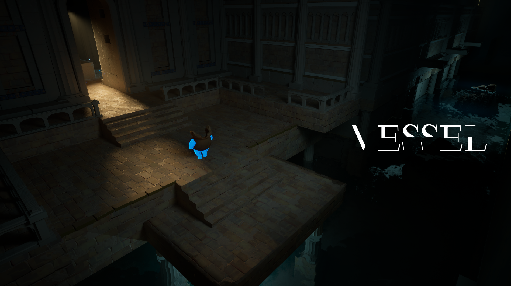
"Compression & Release" is an architectural concept where tight, restrictive spaces open into larger, more expansive areas to create contrast and impact.
I applied this to Vessel's tutorial, starting with tight, confined spaces that mirror the protagonist's fragility. As players learn the mechanics, the levels gradually open up, creating a sense of relief and discovery.
The game begins in a dock-like space, grounding the player in the character's origins while subtly guiding their path forward. A canal stretches across the screen, expanding the sense of space and drawing the eye along its length. Meanwhile, a warm light spilling from a doorway on the left acts as a natural beacon, suggesting the next point of interest.
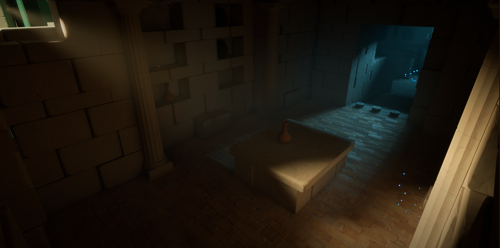
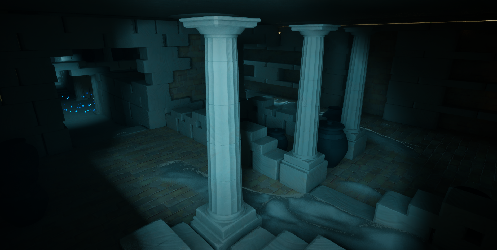
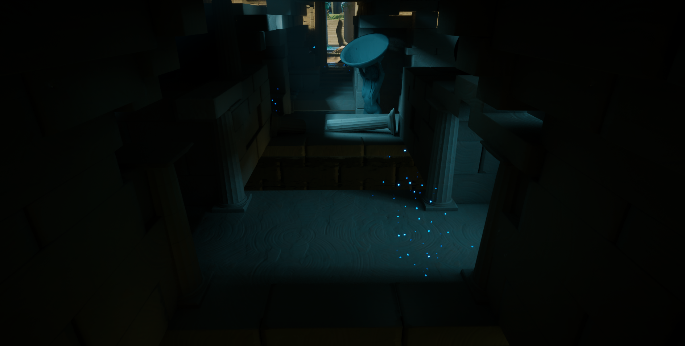
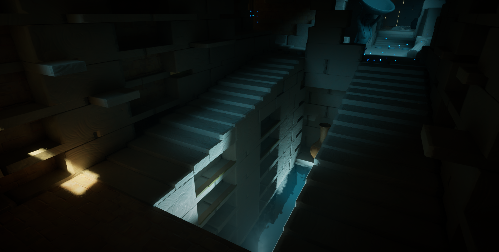
This is where the space compresses. Dim lighting shrouds the area, allowing players to glimpse the edges of obstacles but forcing them to carefully study each shot to navigate through. Here, all the pots sleep. Landing on the dock, climbing the shelves, and settling into an endless slumber.
The cold color palette reinforces the narrow, bleak atmosphere, emphasizing a sense of stillness and quiet abandonment.
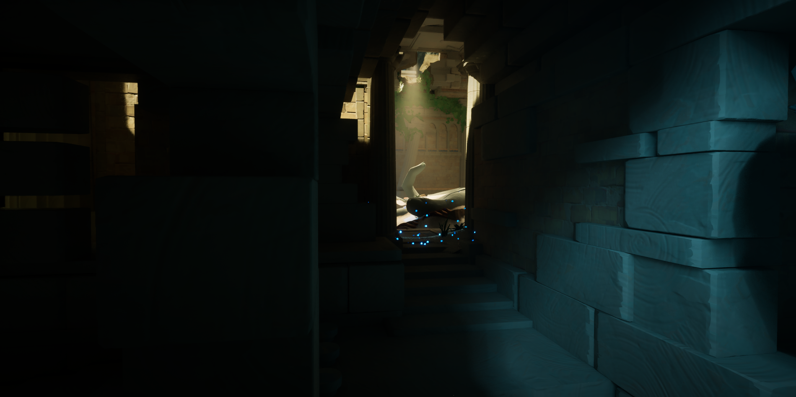
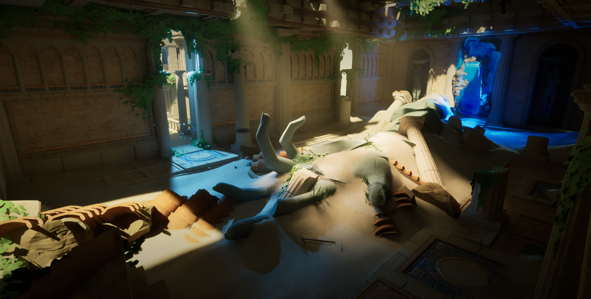
This space serves as the central hub, connecting to the rest of the levels. A place of both transition and significance. A broken statue has rested here for centuries. Where did it come from, shall remain a secret.
We designed several animation sequences where the character receives rewards in this space, reinforcing its importance. The statue's outstretched palm acts as the focal point, drawing the player's attention.
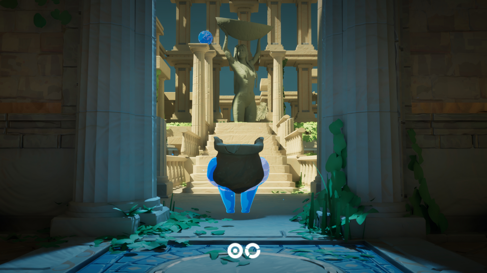
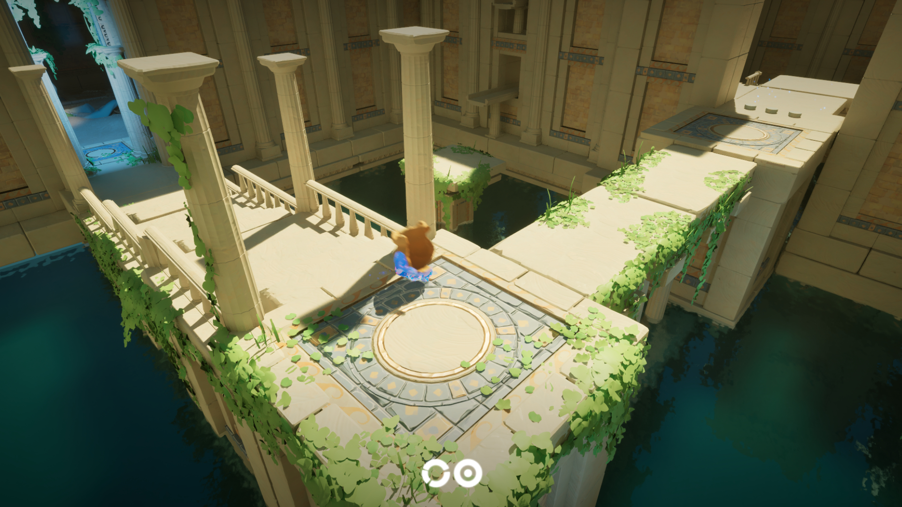
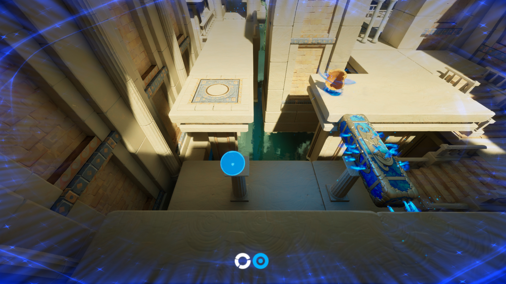
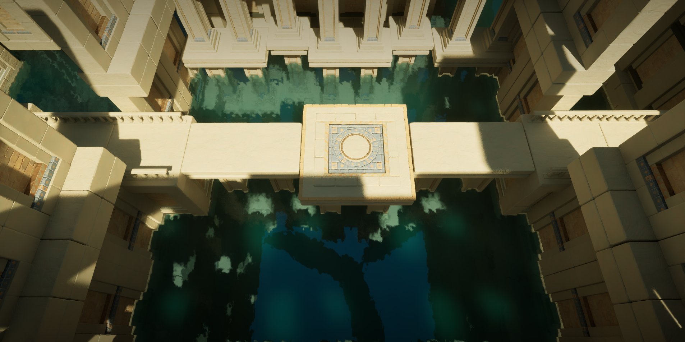
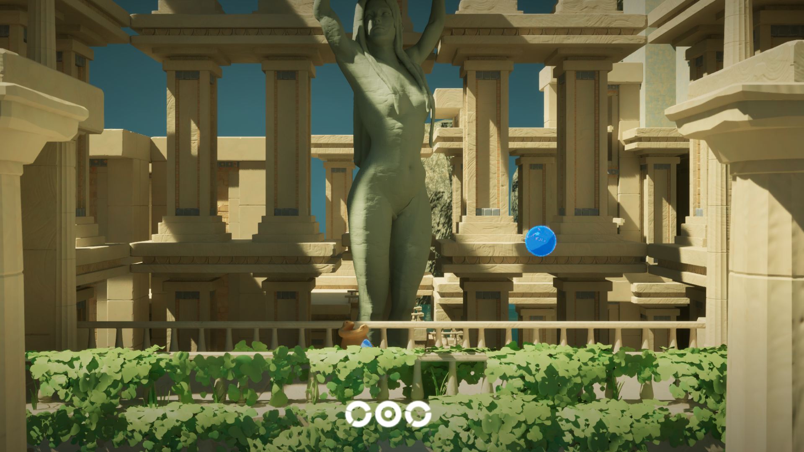
This is where the space opens up. After a tense journey through narrow pathways and confined corridors, the player emerges into a wide, open area. A moment of relief and possibility. Here, they face a sequence of challenges, but with the freedom to navigate and experiment.
The color palette shifts to warmer tones, creating a more inviting atmosphere. This contrast not only signals progress but also offers a sense of encouragement, reinforcing the idea that growth comes from overcoming obstacles.